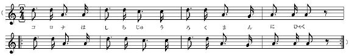

太陽マジックのうたはもう青ぞらいっぱい、ひっきりなしにごうごうごうごう鳴っています。

わたしたちは黄いろの
実習服を
着て、くずれかかった
煉瓦の
肥溜のとこへあつまりました。
冬中いつも
唇が青ざめて、がたがたふるえていた
阿部時夫などが、今日はまるでいきいきした顔いろになってにかにかにかにか
笑っています。ほんとうに阿部時夫なら、冬の間からだが
悪かったのではなくて、シャツを一
枚しかもっていなかったのです。それにせいが高いので、教室でもいちばん火に遠いこわれた戸のすきまから風のひゅうひゅう入って来る北東の
隅だったのです。
けれども今日は、こんなにそらがまっ
青で、見ているとまるでわくわくするよう、かれくさも
桑ばやしの黄いろの
脚もまばゆいくらいです。おまけに
堆肥小屋の
裏の二きれの雲は
立派に光っていますし、それにちかくの空ではひばりがまるで
砂糖水のようにふるえて、すきとおった空気いっぱいやっているのです。もう
誰だって
胸中からもくもく
湧いてくるうれしさに笑い出さないでいられるでしょうか。そうでなければ
無理に口を
横に大きくしたり、わざと
額をしかめたりしてそれをごまかしているのです。
（コロナは六十三万二百
※［＃ト音記号、48-12］‥‥‥
※［＃ト音記号、48-13］‥‥‥
ああきれいだ、まるでまっ赤な花火のようだよ。）
それはリシウムの
紅焔でしょう。ほんとうに
光炎菩薩太陽マジックの歌はそらにも
地面にもちからいっぱい、日光の小さな小さな
菫や
橙や赤の
波といっしょに
一生けん
命に鳴っています。カイロ
男爵だって早く
上等の
絹のフロックを
着て明るいとこへ
飛びだすがいいでしょう。
楊の木の中でも
樺の木でも、またかれくさの
地下茎でも、月光いろの
甘い
樹液がちらちらゆれだし、早い
萱草やつめくさの
芽にはもう
黄金いろのちいさな
澱粉の
粒がつうつう
浮いたり
沈んだりしています。
（※［＃ト音記号、49-8］‥‥‥
コロナは三十七万十九
※［＃ト音記号、49-10］‥‥‥
※［＃ト音記号、49-11］‥‥‥ ）
くずれかかった
煉瓦の
肥溜の中にはビールのように
泡がもりあがっています。さあ
順番に
桶に
汲み
込もう。そこらいっぱいこんなにひどく明るくて、ラジウムよりももっとはげしく、そしてやさしい光の
波が一生けん命一生けん命ふるえているのに、いったいどんなものがきたなくてどんなものがわるいのでしょうか。もうどんどん
泡があふれ出してもいいのです。青ぞらいっぱい鳴っているあのりんとした
太陽マジックの歌をお
聴きなさい。
（コロナは六十七万四千
※［＃ト音記号、50-6］‥‥‥
※［＃ト音記号、50-7］‥‥‥ ）
さあ、ではみんなでこいつを
下台の麦ばたけまで
持って行こう、こっちの
崖はあんまり
急ですからやっぱり女学校の
裏をまわって
楊の木のあるとこの
坂をおりて行きましょう。
大丈夫二十分かかりません。なるべくせいの
似たような人と、
二人で一つずつかついで下さい。そうです、町の裏を通って行くのです。
阿部君はいっしょに行くひとがない、それはぼくといっしょに行こう。ああ鳴っている、鳴っている、そこらいちめん鳴っている太陽マジックの歌をごらんなさい。
（※［＃ト音記号、51-1］‥‥‥
※［＃ト音記号、51-2］‥‥‥
コロナは八十三万五百
※［＃ト音記号、51-4］‥‥‥
※［＃ト音記号、51-5］‥‥‥ ）
まぶしい山の雪の
反射です。わたくしがはたらきながら、また
重いものをはこびながら、手で水をすくうことも考えることのできないときは、そこから白びかりが
氷のようにわたくしの
咽喉に
寄せてきて、こくっとわたくしの
咽喉を鳴らし、すっかりなおしてしまうのです。それにいまならぼくたちの
膝はまるで
上等のばねのようです。
去年の秋のようにあんなつめたい風のなかなら
仕事もずいぶんひどかったのですけれども、いまならあんまり楽でただ少し
肩の
重苦しいのをこらえるだけです。それだって
却って
胸があつくなっていい
気持なくらいです。
（コロナは六十三万十五
※［＃ト音記号、52-2］‥‥‥
※［＃ト音記号、52-3］‥‥‥ ）
おおこまどり、鳴いて行く鳴いて行く、
音譜のように
飛んで行きます。赤い
上着でどこまで今日はかけて行くの。いいねえ、ほんとうに、
かえれ、こまどり、アカシヤづくり。
赤の上着に野やまを越えて
（※［＃ト音記号、52-8］‥‥‥
※［＃ト音記号、52-9］‥‥‥
コロナは三十七万二千
※［＃ト音記号、52-11］‥‥‥ ）
そこの角から
赤髪の
子供がひとり、こっちをのぞいてわらっています。おい、
大将、
証書はちゃんとしまったかい。
筆記帳には組と名前を
楷書で書いてしまったの。
さあ、春だ、うたったり走ったり、とびあがったりするがいい。
風野又三郎だって、もうガラスのマントをひらひらさせ大よろこびで
髪をぱちゃぱちゃやりながら野はらを
飛んであるきながら春が来た、春が来たをうたっているよ。ほんとうにもう、走ったりうたったり、飛びあがったりするがいい。ぼくたちはいまいそがしいんだよ。
（コロナは八万三千十九
※［＃ト音記号、53-8］‥‥‥
※［＃ト音記号、53-9］‥‥‥ ）
砂土がやわらかい
匂の
息をはいています。いままでやすんでいた虫どもが、ぼんやりといま
眼をさまし、しずかに息をするらしいのです。麦はつやつや光っています。雪の下からうまくとけて出て青い麦です。早く走って行こう、かけさえしたらすぐに麦は
吸い
込むのだ。
（コロナは八万三千十九）
わたくしたちが
柄杓で
肥を麦にかければ、水はどうしてそんなにまだ力も入れないうちに
水銀のように青く光り、たまになって麦の上に飛びだすのでしょう、また砂土がどうしてあんなにのどの
乾いた子どもの水を
呑むように肥を吸い込むのでしょう。もうほんとうにそうでなければならないから、それがただひとつのみちだからひとりでどんどんそうなるのです。
（コロナは十万八千二百
※［＃ト音記号、54-7］‥‥‥
※［＃ト音記号、54-8］‥‥‥ ）
こんどは帰りはわたくしたちは近みちをしてあの
急な
坂をのぼりましょう。あすこの坂なら
杉の木が
昆布かびろうどのようです。
阿部君、だまってそらを見ながらあるいていて一体何を見ているの。そうそう、青ぞらのあんな高いとこ、
巻雲さえ
浮びそうに見えるとこを、三羽の
鷹かなにかの鳥が、それとも
鶴かスワンでしょうか、三またの
槍の
穂のようにはねをのばして白く光ってとんで行きます。
（コロナは三十七万二百
※［＃ト音記号、55-1］‥‥‥
※［＃ト音記号、55-2］‥‥‥ ）
おや、このせきの去年のちいさな丸太の
橋は、
雪代水で
流れたな、からだだけならすぐ
跳べるんだが
肥桶をどうしような。阿部君、まず跳び
越えてください。うまい、少しぐちゃっと
苔にはいったけれども、まあいいねえ、それではぼくはいまこっちで桶をつるすから、そっちでとってくれ
給え。そら、
重い、ぼくは
起重機の
一種だよ。重い、ほう、天びん
棒がひとりでに、
磁石のように
君の手へ
吸い
着いて行った。
太陽マジックなんだほんとうに。うまい。
（※［＃ト音記号、55-9］‥‥‥
※［＃ト音記号、55-10］‥‥‥ ）
楊の木でも
樺の木でも、
燐光の
樹液がいっぱい
脈をうっています。